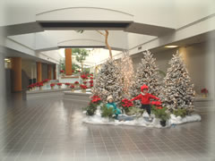
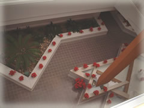
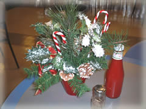

| ..*..*.. 2002年12月21日(土) 晴れ ..*..*..  毎年、会社のクリスマスの飾りつけはこんな感じです。12月の初めくらいにはこんな風に飾られ（子供が２人スケートをしている）、クリスマスが終わるまで続きます。 今年は人間大の人形がこんな風に置いてあってちょっと恐いです(^^; その向こうには等間隔にポインセチアが並べられています。うちの会社は、今年は12月25日から1週間お休みなのですが、24日にはこのポインセチアを欲しい人が持って帰ることができます。  上からみるとこんな感じです。うちの会社は、真ん中が長細い吹き抜けになっているので、上から見てもきれいです。 以前、聞いたんだけど、アメリカの会社は、どんなに不況なときでも、こういった飾り付けをやめないそうです。「そこまで手が回らない」と飾り付けをやめてしまうと、余計、社員に不安をつのらせて逆効果になってしまうそうです。 だからたぶん、シリコンバレーのどんな会社も、少なくともこういう飾り付けをしてると思います。日本のデパートなんかの派手さにはかなわないけど、ちょっとおちつきますね。  |